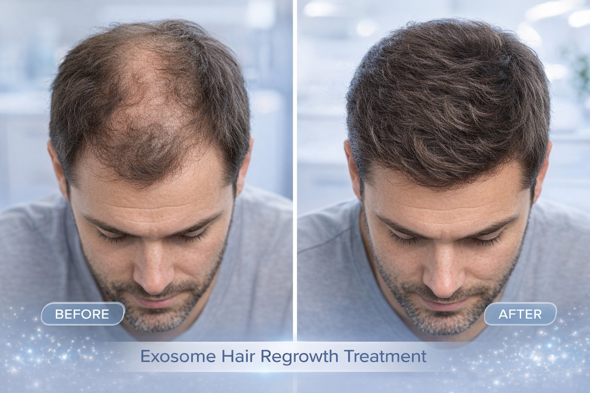
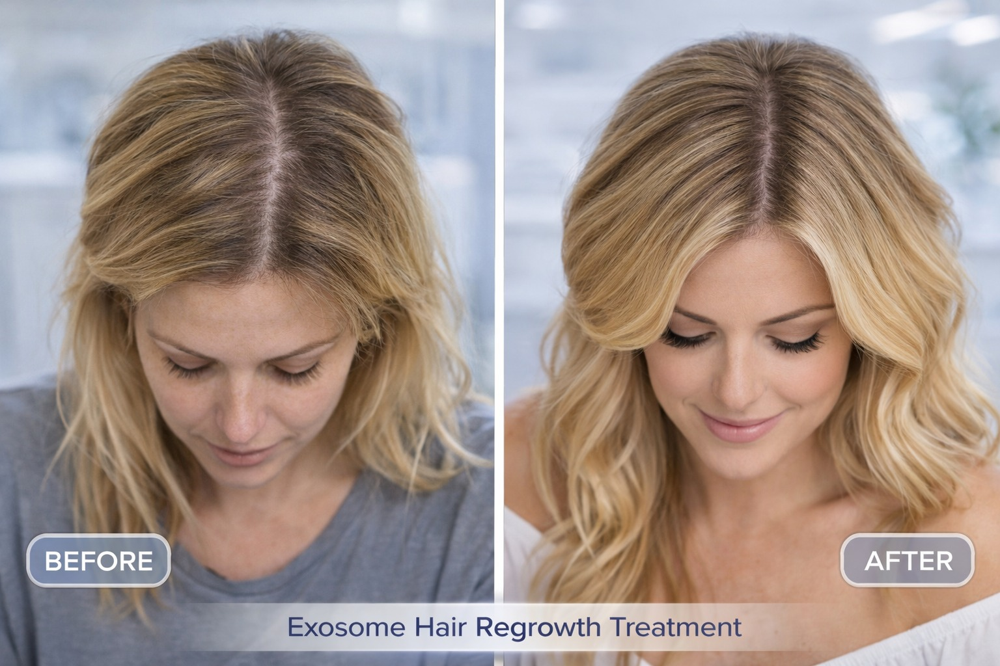
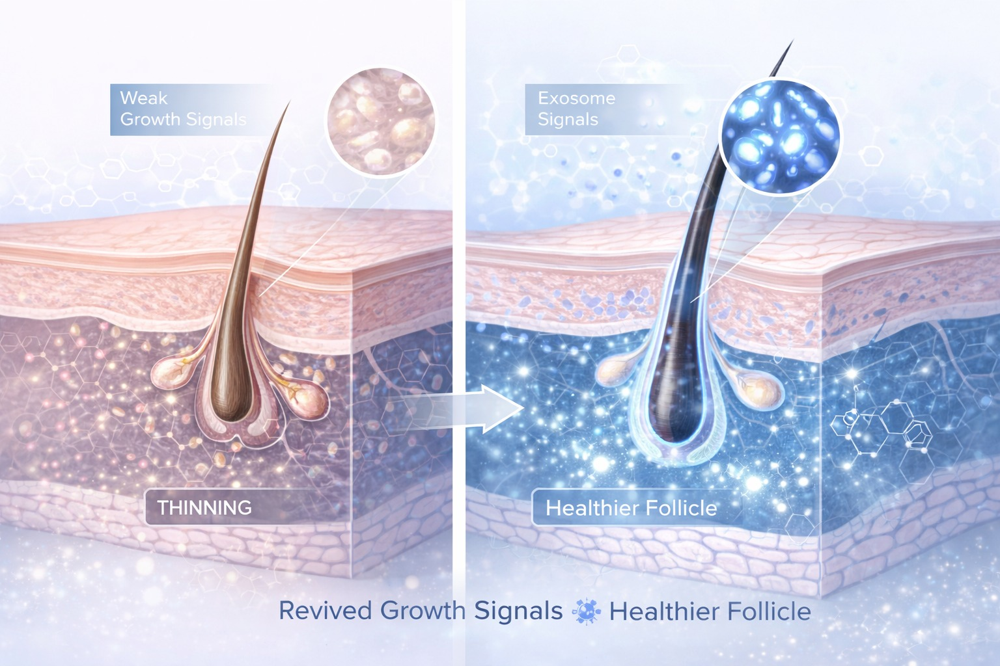

טכנולוגיה ביולוגית מתקדמת לחידוש זקיקי השיער



אקסוזומים הם ווזיקולות ביולוגיות זעירות — שליחים טבעיים שתאי הגוף משתמשים בהם להעברת מידע ואותות בין תאים. בטיפול שיער, אקסוזומים מוזרקים לקרקפת כדי לעורר את תאי הגזע של הזקיקים, לעודד התחדשות תאית ולחדש את פעילות זקיקי השיער שנחלשו.
מדובר בטכנולוגיה מתקדמת מאוד המשמשת כיום בחזית הרפואה הרגנרטיבית — ומיושמת ברויאל-מד כחלק מפרוטוקולי שיקום שיער מתקדמים.
אקסוזומים הם מבנים זעירים (ננומטרים) שמופרשים מתאים שונים בגוף. הם נושאים בתוכם:
כאשר מוזרקים לקרקפת, הם "מדברים" עם תאי הגזע של הזקיקים ומורים להם להתחיל מחדש את מחזור הצמיחה.
התוצאות מתפתחות באופן הדרגתי לאורך שבועות — וממשיכות להשתפר גם לאחר סיום הטיפולים.
מספקת ויטמינים, מינרלים וחומרים תזונתיים לזקיקים — "דשן" לשיער.
פועלים ברמה התאית — "מדריכים" את הזקיקים לחזור לפעילות ולצמוח. עמוק ומתקדם יותר.
השילוב בין השניים מייצר תוצאות טובות יותר מכל אחד לבדו.
ברויאל-מד אנו משלבים את טכנולוגיית האקסוזומים בפרוטוקולי שיקום שיער מותאמים אישית — לתוצאות עמוקות ויציבות לאורך זמן.
לפני תחילת טיפול, נדרש אבחון מקצועי לצורך התאמת הפרוטוקול המדויק עבורך.
תיאום תור טלפוני ללא עלות